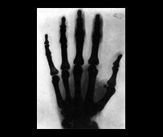
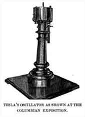

|

|

|
Tesla's Works
X-Rays
Starting in 1894, Tesla began investigating what he referred to as radiant energy of "invisible" kinds that he had noticed damaged film in his lab in previous experiments(later identified as "Roentgen rays" or "X-Rays"). His early experiments were with Crookes tubes, a cold cathode electrical discharge tube. Tesla may have been the first person in North America to accidentally capture an X-ray image when he tried to photograph Mark Twain illuminated by an earlier type of gas discharge tube Geissler tube in 1895. The only thing captured in the image was the metal locking screw on the camera lens. Soon after, much of Tesla's early research—hundreds of invention models, plans, notes, laboratory data, tools, photographs, valued at $50,000—was lost in the 5th Avenue laboratory fire of March 1895. Tesla is quoted by The New York Times as saying, "I am in too much grief to talk. What can I say?"
In March 1896, after hearing of Wilhelm Röntgen's discovery of X-ray and X-ray imaging (radiography), Tesla proceeded to do his own experiments in X-ray imaging, developing a high energy single terminal vacuum tube of his own design that had no target electrode and that worked from the output of the Tesla Coil (the modern term for the phenomenon produced by this device is bremsstrahlung (or braking radiation). In his research, Tesla devised several experimental setups to produce X-rays. Tesla held that, with his circuits, the "instrument will [... enable one to] generate Roentgen rays of much greater power than obtainable with ordinary apparatus".
Tesla noted the hazards of working with his circuit and single-node X-ray-producing devices. In his many notes on the early investigation of this phenomenon, he attributed the skin damage to various causes. He believed early on that damage to the skin was not caused by the Roentgen rays, but by the ozone generated in contact with the skin, and to a lesser extent, by nitrous acid. Tesla incorrectly believed that X-rays were longitudinal waves, such as those produced in waves in plasma. These plasma waves can occur in force-free magnetic fields.
On 11 July 1934, the New York Herald Tribune published an article on Tesla, in which he recalled an event that would occasionally take place while experimenting with his single-electrode vacuum tubes; a minute particle would break off the cathode, pass out of the tube, and physically strike him.“Tesla said he could feel a sharp stinging pain where it entered his body, and again at the place where it passed out.” In comparing these particles with the bits of metal projected by his “electric gun”, Tesla said, “The particles in the beam of force ... will travel much faster than such particles . .. and they will travel in concentrations.”
Other Inventions
In 1898, Tesla devised an "electric igniter" or spark plug for internal combustion gasoline engines. He was awarded U.S. Patent 609,250, "Electrical Igniter for Gas Engines", for this mechanical ignition system.
Tesla invented an electro-mechanical oscillator—Tesla's oscillator—a steam-powered mechanical oscillator. At his Houston Street lab, while experimenting with mechanical oscillators, Tesla allegedly generated a resonance of several buildings, causing complaints to the police. As the speed grew, it is said that the machine oscillated at the resonance frequency of his own building and, belatedly realizing the danger, he was forced to use a sledge hammer to terminate the experiment, just as the police arrived. In February 1912, an article—“Nikola Tesla, Dreamer” by Allan L. Benson—was published in World Today, in which an artist's illustration appears showing the entire earth cracking in half with the caption, “Tesla claims that in a few weeks he could set the earth's crust into such a state of vibration that it would rise and fall hundreds of feet and practically destroy civilization. A continuation of this process would, he says, eventually split the earth in two.”